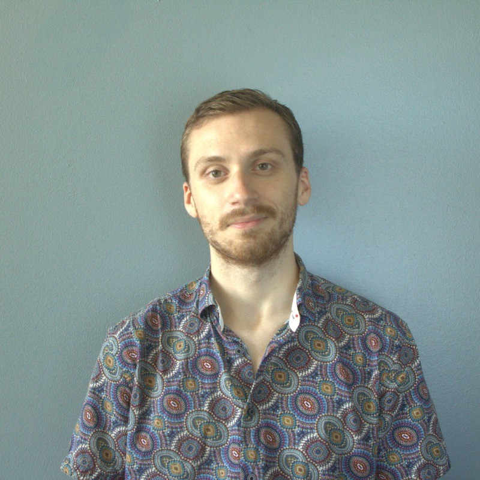

ご挨拶
科学・テクノロジー・その他
🇯🇵 日本語・🇹🇼 台湾華語 🡲 🇺🇸 英語
AIを使わない、正確であなただけへの翻訳
初めまして。
Thank you for visiting. If you're looking for a high-quality, human translation that's tailored to fit your specific needs, I believe you've come to the right place.
These days, getting a translation all too often means working with large agencies whose goal is to get clients in and out as quick as possible. The result is often an AI translation which may then be edited by whoever accepts the job at the lowest price. This business model means you'll neither be able to communicate with your translator nor know if they're even human at all. You might save money in the short term, but when quality drops or you have particular requests, communicating your needs through a manager who doesn't have your best interests in mind becomes a major headache, wasting your valuable time and money in the process. In this system, neither translators nor clients are truly respected.
Sen Translation is motivated by my belief that translation is a craft where in-depth domain knowledge and understanding of client needs will always be paramount. Clients don't deserve the indirect, haphazard, good-enough approach of many agencies – especially when it comes to scientific and technical matters where the room for error is small. Not only do I employ my years worth of scientific, technical, and linguistic expertise, but most importantly, my process emphasizes a close working relation with each client and extensive subject matter research so that each translation is purposefully crafted. I ask questions, seek to understand your goals, keep you informed throughout the process, and never hand your data over to AI systems. For a truly high-quality translation, I believe there is simply no better way.
I highly look forward to working together and delivering the translation you deserve.
何卒よろしくお願い申し上げます。

